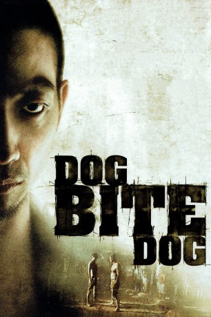

#5282 Dog Bite Dog - Wie räudige Hunde
 
 IMDB-Wertung: 6.6 / 10
IMDB-Wertung: 6.6 / 10  Metascore: 0
Metascore: 0 
Als Kind wurde Pang von Gangstern auf einer kambodschanischen Müllkippe aufgelesen und wie ein Tier zur kompromisslosen Tötungsmaschine in Diensten des organisierten Verbrechens gedrillt. Jetzt schifft man ihn nach Hongkong ein, wo der Wolfsknabe einen Hit erledigen soll. Pang leistet ganze Arbeit und flieht hernach zur Müllhalde, wo er Freundschaft mit einer autistischen Jungpennerin schließt. Wai, umstrittener Cop in Diensten der Mordfahndung, bleibt ihm auf den Fersen und erlebt blaue Wunder auf Wunder.
Jahr: 2006
Dauer: 54 Minuten
FSK: 18
Land: Hong-Kong Studio: Gala Film DistributionTonspuren:
Untertitel:
Auflösung: SD (640x352) Größe: 701 MB
Genre: Action, Thriller, Drama, Krimi
Regisseur: Pou-Soi Cheang
Drehbuch: Matt Alan
Soundtrack:
Darsteller:
 Edison Chen als Pang
Edison Chen als Pang Siu-Fai Cheung als Chief Insp. Sum
Siu-Fai Cheung als Chief Insp. Sum Suet Lam als Insp. 'Fat' Lam
Suet Lam als Insp. 'Fat' Lam Richard Epcar als
Richard Epcar als  Angela Oh als Wai , uncredited
Angela Oh als Wai , uncredited- Sam Lee als Insp. Ti Wai
- Weiying Pei als Yu
- Yiu-Cheung Lai als Insp. Tang Wing Cheung
- Ka Wah Lam als Insp. Ti - Wai's Father
- Hao Ren als Mr. Lee
- Kam-wah Koo als
- Ask Lee als Ben
- Chi Wai Lao als Internal Affairs Officer
- Ka Wing Lee als Taxi Driver
- Ka Sing Chau als Funny Eyes
- Kar Fai Lee als Kitchen Boy
- Ting-Fung Li als Young Wai
- Chi Ming Woo als Hooligan A
- Sze-yan Lee als Hooligan B
- Ka Shun Kwok als Policeman
- Chow Hung Lau als
- Kam Fai Wong als Hostage at Eatery
- Chi Wai Chiu als
- Chun Man Ng als Clinic Doctor
- Wai-ki Wong als
- Yuk Hang Chan als Guy in Car Repair Shop
- Kwai Sang Ip als Restaurant Manager
- Phongpranot Kitkorn als Yu's Father
- Komsan Treepong als Thai Doctor
- Ray als Boxing Club Owner's Assistant
- Sukrit Suksawaeng als Boxer A
- Surasak Sriratana als Boxer B
- Songsak Vipoosiri als Boxer C
- Jagkarin Chamnong als Boxer D
- Ramai Motipan als Boxer E
- Yodying Singphaset als Boxer F
Datei: X:\FSK18-Eastern\Dog Bite Dog - Wie räudige Hunde (2006, FSK18, 640x352).avi seit 09.01.2017
Festplatte: FSK18
 Es gibt insgesamt 102 Filme in der Gruppe 'FSK18-Eastern'
Es gibt insgesamt 102 Filme in der Gruppe 'FSK18-Eastern'